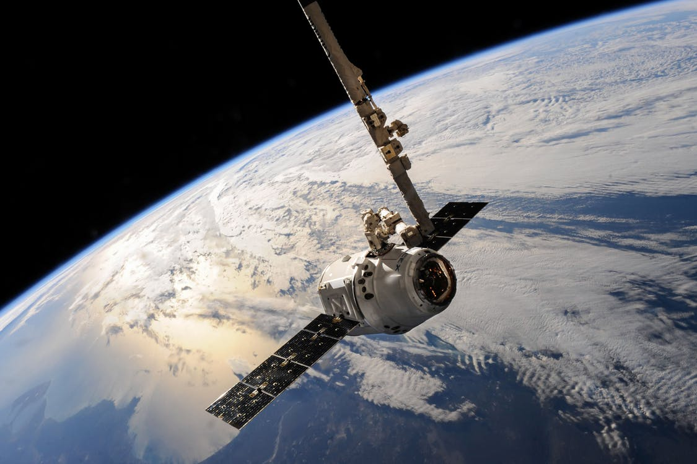
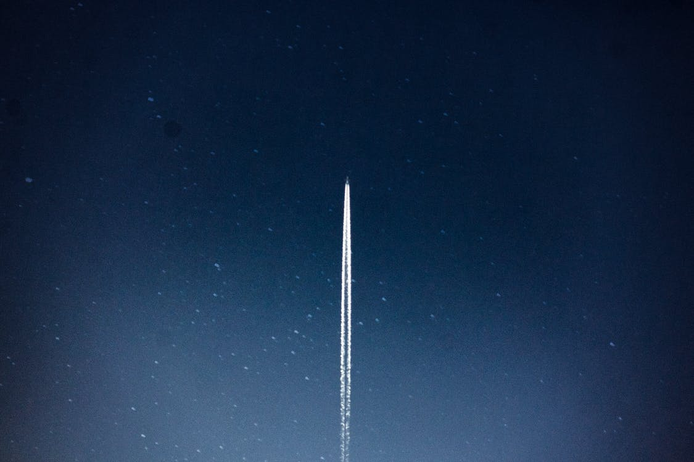

An international space research organisation that involve to discover the new space things
The Manned Space Flight Education Foundation inonprofit educational foundation offering extensive science education programs and a space museum. The cornerstone of its education mission is Space Center Houston, a leading science and space exploration learning center. It is one of Houston’s top attractions, the area’s No. 1 attraction for international visitors, the Official Visitor Center of NASA Johnson Space Center and a Smithsonian Affiliate.
Space Center Houston has welcomed nearly 20 million visitors and currently hosts more than 1 million visitors annually in its 250,000-square-foot educational complex. Space Center Houston has a $73 million impact on the greater Houston economy, according to a 2016 economic study by Jason Murasko and Stephen Cotten, associate professors of economics at the University of Houston – Clear Lake.

There is always something new at Space Center Houston with an amazing array of traveling exhibits and astounding events.

Space Center Houston has the world’s largest collection of moon rocks and lunar samples for public view.
The certification process involves rigorous training for staff, inspections and improvements that enable Space Center Houston to better welcome and accommodate guests with autism spectrum disorder and other sensory and cognitive challenges. Space Center Houston was always welcoming to guests with special needs,” McMahon said. “I was able to help support that commitment by leading informal training for my instructor colleagues on working with guests with disabilities, including autism.